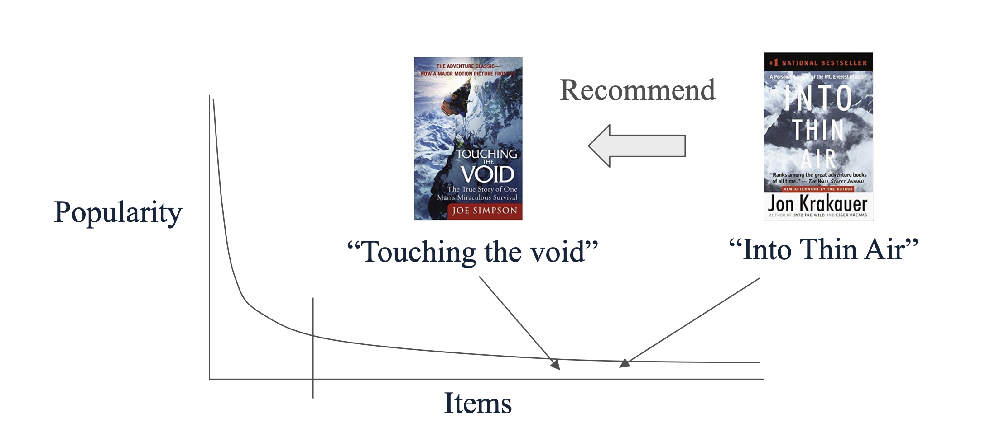
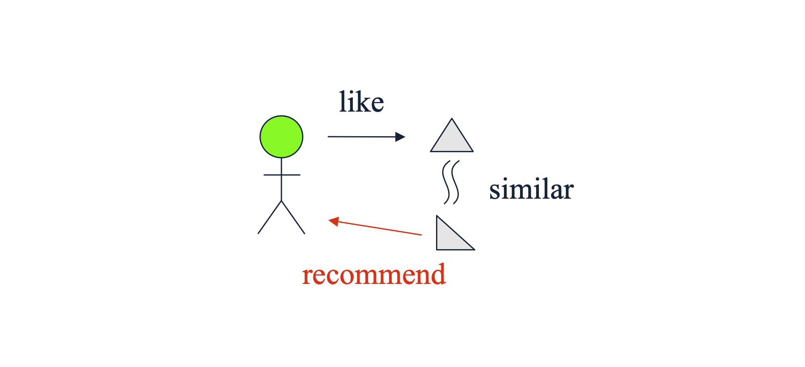
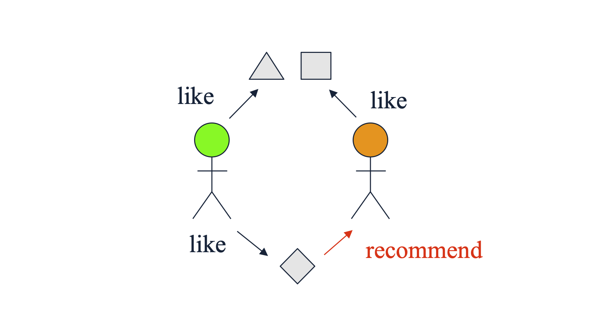

1. 추천 시스템(Recommender Systems) 개요
추천 시스템(Recommender Systems)은 사용자(User)가 직면한 수많은 선택지(Items) 중에서, 특정 사용자가 가장 선호할 만한 옵션을 예측하여 제안하는 애플리케이션의 한 종류입니다. 정보 과부하(Information Overload) 시대에 사용자의 의사결정을 돕는 핵심 기술로 자리 잡았습니다.
추천 시스템은 크게 개인화 여부에 따라 두 가지로 분류할 수 있습니다.
- 비개인화 추천 (Non-personalized recommendations)
- 에디토리얼 및 수동 큐레이션 (Editorial and hand-curated): 전문가나 플랫폼 편집자가 직접 선정한 ‘에디터 추천’, ‘필수 아이템’ 목록 등입니다.
- 단순 집계 기반 (Simple aggregates): 개인의 특성을 반영하지 않고 전체 데이터를 집계한 결과입니다. 예컨대 ‘주간 Top 10’, ‘가장 많이 팔린 상품’, ‘최근 업로드된 영상’ 등이 여기에 해당합니다.
- 개인화 추천 (Personalized recommendations)
- 개별 사용자 맞춤형 (Tailored to individual users): Amazon의 상품 추천, Netflix의 영화/드라마 추천, YouTube의 알고리즘 영상 추천처럼 사용자의 과거 행동 데이터, 취향, 프로필을 분석하여 각 개인에게 고유하게 맞춰진 리스트를 제공합니다.
2. 물리적 희소성에서 디지털 풍부함으로 (From Scarcity to Abundance)
추천 시스템이 현대 IT 비즈니스에서 필수적인 요소가 된 배경에는 유통 환경의 패러다임 변화가 있습니다.
과거 오프라인 기반의 물리적 유통 시스템은 자원의 희소성(Scarcity) 이라는 근본적인 한계를 지녔습니다. 물리적인 상점은 진열할 수 있는 선반 공간(Shelf space)이 제한적이기 때문에, 상업적 이윤을 극대화하기 위해 필연적으로 ‘가장 잘 팔리는 소수의 인기 품목(Head)’ 위주로 매대를 구성해야 했습니다.
반면, 인터넷의 발전으로 등장한 온라인 스토어는 무한한 풍부함(Abundance) 을 제공합니다. Amazon과 같은 온라인 플랫폼은 수백만 권의 책을 데이터베이스화하여 사실상 존재하는 ’모든 것’을 사용자에게 제공할 수 있습니다. 물리적 제약이 사라짐에 따라, 플랫폼은 획일화된 매대 대신 모든 사용자에게 각자의 취향에 맞는 독립적이고 고유한 인터페이스(A personalized list of items) 를 제공할 수 있게 되었습니다.
3. 롱테일(The Long Tail) 현상과 추천 시스템의 목표
- 온라인 스토어의 ’풍부함’은 경제학적으로 롱테일(Long Tail) 현상을 촉발했습니다. 물리적 매장이 소수의 ’인기 품목(Head)’에 집중했다면, 온라인 플랫폼은 잘 알려지지 않은 방대한 ’비주류 품목(Tail)’까지 모두 포괄합니다.

위 그림에서 보듯, 대부분의 조회수나 판매량은 소수의 인기 아이템(Head)에서 발생하지만, 꼬리(Tail) 부분에 위치한 수많은 비주류 아이템들의 총합 역시 무시할 수 없는 거대한 시장을 형성합니다.
여기서 가장 이상적인 추천 시스템의 역할이 도출됩니다. 대중적인 베스트셀러(‘Into Thin Air’)는 굳이 추천하지 않아도 사용자들이 스스로 찾아낼 확률이 높습니다. 진정한 추천의 가치는 사용자가 스스로 발견하기 어렵지만 개인의 취향에는 완벽히 부합하는 ‘적절한 꼬리(Proper Tails)’에 위치한 아이템(예: ’Touching the Void’)을 발굴하여 연결해 주는 것에 있습니다.
4. 유틸리티 행렬 (Utility Matrix)
추천 시스템을 수학적으로 모델링하기 위해 가장 먼저 정의해야 하는 데이터 구조가 유틸리티 행렬(Utility Matrix) 입니다. 이 행렬은 두 가지 핵심 엔티티인 사용자(Users) 와 아이템(Items) 간의 상호작용(선호도)을 나타냅니다.
사용자 집합: \(U = \{u_1, u_2, \dots, u_m\}\)
아이템 집합: \(I = \{i_1, i_2, \dots, i_n\}\)
유틸리티 행렬: \(R \in \mathbb{R}^{m \times n}\)
행렬 \(R\)의 각 원소 \(r_{ui}\)는 사용자 \(u\)가 아이템 \(i\)에 대해 부여한 선호도(Preference)를 나타냅니다. 이 값은 1~5점 별점과 같은 순서형 집합(Ordered set)으로 구성될 수 있습니다.
| Users | HP1 | HP2 | HP3 | TW | SW1 | SW2 | SW3 |
|---|---|---|---|---|---|---|---|
| A | 4 | 5 | 1 | ||||
| B | 5 | 5 | 4 | ||||
| C | 2 | 4 | 5 | ||||
| D | 3 | 3 |
- 위 표는 사용자 A~D와 영화 아이템 HP, TW, SW 시리즈 간의 유틸리티 행렬 예시입니다. 빈칸은 관측되지 않은 평점을 의미합니다.
행렬의 희소성 (Sparsity)
- 유틸리티 행렬의 가장 중요한 특징은 극단적으로 희소(Sparse) 하다는 것입니다. 현실 세계에서 한 명의 사용자가 경험하고 평가하는 아이템은 전체 시스템에 존재하는 수백만 개의 아이템 중 극히 일부에 불과합니다. 따라서 행렬의 대부분의 항목(Entries)은 ‘Unknown(알 수 없음)’ 상태입니다. 추천 시스템의 본질적인 기계학습 태스크는 관측된 소수의 평점 데이터를 바탕으로 이 빈칸(Unobserved entries)들의 값을 정확하게 추론 및 예측(Matrix Completion) 하는 것입니다.
5. 사용자 평점의 수집 (Gathering Ratings)
- 유틸리티 행렬을 구성하기 위해서는 사용자로부터 선호도 데이터를 수집해야 하며, 이는 수집 방식에 따라 명시적 피드백과 암시적 피드백으로 나뉩니다.
5.1. 명시적 피드백 (Explicit Feedback)
- 시스템이 사용자에게 아이템에 대한 평가를 직접 요구하여 얻는 데이터입니다.
- 예시: YouTube 시청 후의 ‘좋아요/싫어요’ 버튼 클릭, 영화에 대한 1~5점 별점 평가 등.
- 한계점: 사용자는 기본적으로 능동적인 평가를 남기는 것을 귀찮아하므로(Unwilling to provide responses), 데이터 수집량이 적습니다. 또한, 평점을 남기는 행동 자체가 이미 해당 아이템에 특별히 만족했거나 극도로 불만족한 소수 집단의 특성을 반영하기 때문에 선택 편향(Selection Bias) 이 발생하기 쉽습니다.
5.2. 암시적 피드백 (Implicit Feedback)
- 사용자의 자연스러운 행동 패턴을 관찰하여 선호도를 간접적으로 학습하는 방식입니다.
- 예시: 사용자가 특정 영화를 끝까지 시청(Watch)했거나, 상품을 클릭하거나, 장바구니에 담는 행위 자체를 해당 아이템을 ’선호(Like)’한다고 간주(\(r_{ui} = 1\))하는 것입니다.
- 한계점: 행동을 했다는 것(1)은 긍정적 신호로 해석하기 쉽지만, 행동을 하지 않았다는 것(0)이 반드시 ’싫어함(Dislike)’을 의미하지는 않습니다. 단순히 해당 아이템을 몰랐을 수도 있기 때문입니다. 이처럼 낮은 평점(부정적 선호도)을 명확하게 모델링하기가 매우 어렵다는 단점이 있습니다.
6. 개인화 추천 시스템의 두 가지 주요 접근법
- 유틸리티 행렬의 빈칸을 채우기 위해, 머신러닝 기반 개인화 추천 시스템은 크게 두 가지 철학적 접근으로 나뉩니다.
6.1. 콘텐츠 기반 추천 (Content-based Recommendation)
- 아이템 및 사용자의 본질적인 고유 속성(Features/Profiles) 에 집중하는 방법입니다.

- 핵심 논리: ‘사용자 \(u\)는 과거에 자신이 좋아했던 아이템들과 내용(Content)이 유사한 새로운 아이템을 좋아할 것이다.’
- 영화 추천이라면 영화의 장르, 감독, 출연 배우 등의 ’특성(Features)’을 분석하여 유사도를 계산합니다.
6.2. 협업 필터링 (Collaborative Filtering)
- 사용자와 아이템의 속성이 아닌, 사용자-아이템 간의 상호작용(Interactions, 평점 데이터 그 자체) 에 집중하는 방법입니다.

- 핵심 논리: ‘사용자 \(u\)와 과거에 비슷한 평가(취향)를 공유했던 다른 사용자들이 긍정적으로 평가한 아이템이라면, 사용자 \(u\)도 좋아할 것이다.’
- 아이템의 내용이 무엇인지(영화인지 책인지)는 알 필요가 없으며, 오직 유틸리티 행렬 내의 사용자 간의 패턴(User similarity) 혹은 아이템 간의 동시 소비 패턴(Item similarity)만을 활용합니다.